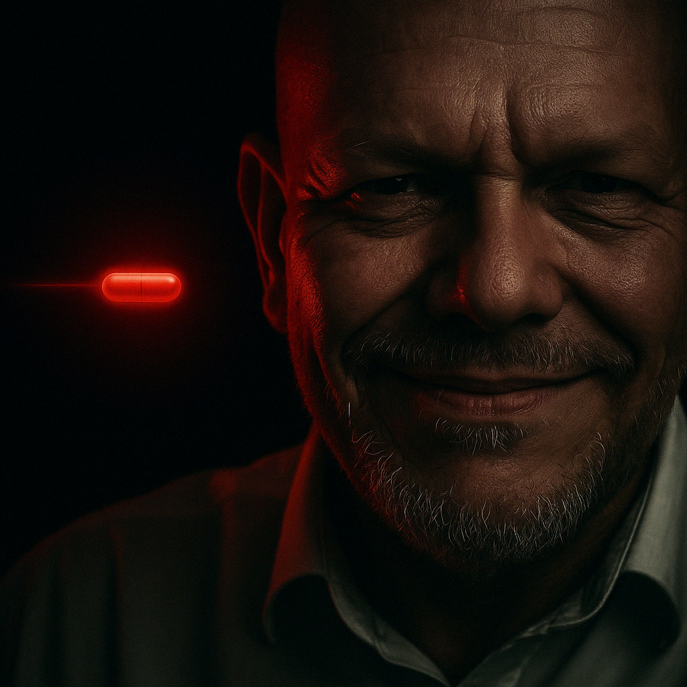
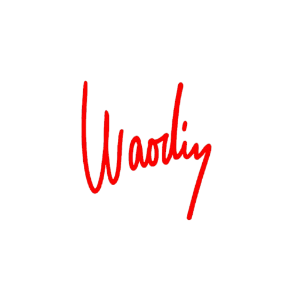

"Některé věci ti nedocvaknou, dokud tě realita nehodí na držku."
Vždycky jsem si myslel, že když budeš hodný, věrný, slušný a dáš ženě, co potřebuje, dostaneš to samé zpátky. Jenže realita se chovala jinak. Slušný chlap končí poslední.
A já se začal ptát
–
"PROČ?"
Začal jsem si všímat vzorců. V práci, ve vztazích, mezi známými. Všude. A začal jsem chápat, že spoustu věcí, kterým jsem věřil, byly jen mýty. Pohádky pro dospělé chlapy, co se bojí pravdy.
Jedna věta, jeden čin, jeden pád. Tak málo stačí, aby ses přestal dívat na svět růžově. A když si jednou sundáš brýle, už to nejde vrátit zpátky.
Něco ve mně řvalo:
„Tohle nemůže být všechno.“
A pak přišel ten moment. Nebylo to video na YouTube ani podcast. Byla to realita. Tvrdá, nekompromisní. A já se rozhodl, že už si nikdy nebudu lhát.
Red Pill není nenávist k ženám. Není to o nadřazenosti. Je to o pravdě. O tom, jak funguje svět, vztahy, psychologie, biologie. O tom, jak se lidi opravdu chovají – ne jak by měli.
Je to filtr, který odděluje přání od reality. Bolí to. Ale zároveň osvobozuje. Protože když víš, s čím hraješ, můžeš hrát naplno.
Bez iluzí.
Bez zbytečných pádů.
Vzala mi naivitu. Přesvědčení, že láska je bezpodmínečná. Vzala mi ideál ženy, kterou „stačí milovat a ona zůstane“. Vzala mi slepou důvěru.
Dala mi klid. Sebevědomí. Vědomí vlastní hodnoty. Dala mi schopnost říkat ne. A taky odvahu. Být sám sebou. Ne pro všechny, ale pro sebe.
Protože když víš, kdo jsi, nepotřebuješ, aby ti to někdo potvrzoval.
Nečekám, že tomu bude každý rozumět. A už vůbec ne, že to každý přijme.
Red Pill není pro všechny.
Ale pokud jsi tu a něco v tobě rezonuje – víš, že není cesty zpět.
Nevěř mi. Ověřuj. Sleduj, co vidíš – ne co si přeješ vidět.